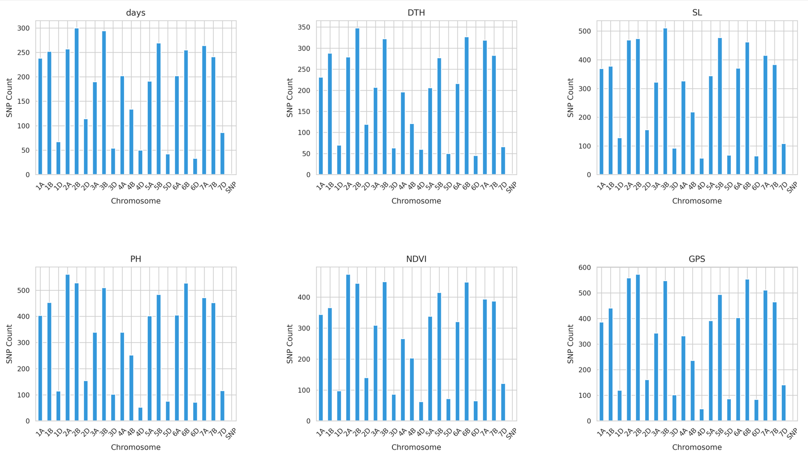
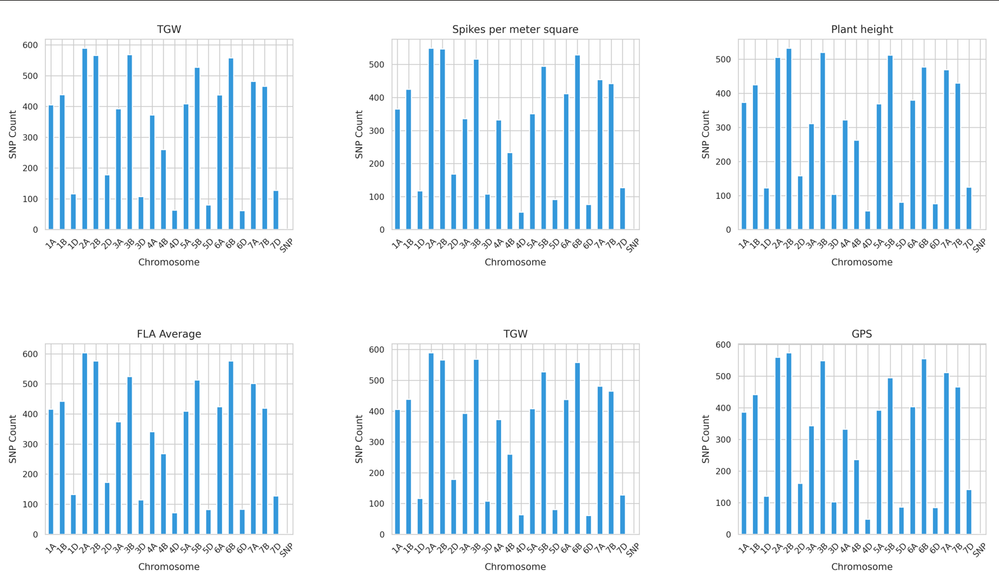
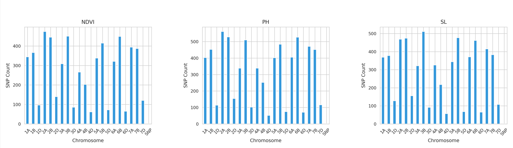

The Random Forest model was applied to identify important SNP markers associated with key wheat traits. This ensemble learning method improved the prediction accuracy by averaging multiple decision trees trained on different subsets of data, thus reducing overfitting and improving generalization.
Below is an example visualization showing feature importance scores obtained from the Random Forest model, highlighting the most significant SNPs contributing to trait variation.
  